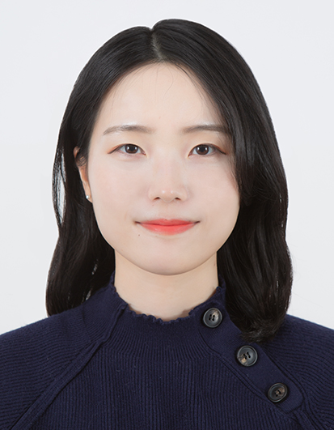

PLANNING · PROCESS IMPROVEMENT · OPERATIONS
김제은
도메인을 넘어 업무 구조를 설계하고 개선하는 운영기획 실무자
제조와 이커머스의 서로 다른 운영 환경에서 업무 흐름을 파악하고, 데이터를 바탕으로 문제를 정의해 실행 가능한 기준과 프로세스로 전환해 왔습니다. 상품 특성보다 업무의 구조에 집중하며, 데이터 분석·자동화·표준화 역량을 다양한 산업의 운영기획과 프로세스 개선에 적용하고자 합니다.

핵심 성과
반복 업무 구조 개선수작업 리스트 생성 8~10분 → 3분 이내 자동화
업무 흐름 통합·표준화QR 입력 경로 5개 업무 통합 파일럿 · 운영 가이드 제작
데이터 기반 의사결정VOC·검품 데이터로 운영 판단 기준 수립 및 현장 적용
경력
컬리
2025.07 — 현재
신선식품 품질관리 / 운영 개선
- 운영 기준 수립: VOC·입고·판매기한 데이터를 비교해 의사결정 근거를 정리하고 거봉 시즌 종료 제안의 현장 반영까지 연결
- 문제 분석·개선안 설계: 품목별 품질 데이터와 고객 불만을 분석해 관리기준 및 운영 개선안 수립
- 업무 자동화: 입고 이력·VOC·상품정보의 매칭·분류·제외 규칙을 정의하고 Apps Script로 리스트 생성 프로세스 자동화
- 업무 표준화: QR·Web App 기반 기록 업무 5개 통합(2주 파일럿), 검품·회송 절차를 현장 가이드로 문서화
에쓰푸드 음성공장
2023.08 — 2025.06
품질보증 / 품질분석
- RT-PCR·LIMS 기반 미생물·이화학 분석 및 품질 이력 관리
- 소비기한 검증, 공정·환경 모니터링, 검사 기록과 공정 조건에 기반한 품질 리스크 확인
케이터링서비스파트너
2023.03 — 2023.07
품질관리
- B2B 납품 제품 표시사항 검토, 공인기관 검사 관리 및 HACCP 기준서 운영·개정
- 이물·클레임 원인 추적, 납품처 개선 및 작업자 위생교육 운영
지앤에프 음성공장
2020.01 — 2022.04
품질관리
- 원부재료 입고 검사·COA 검토 및 완제품 출고 적합성 확인
- 조단백·조지방·수분 등 이화학 분석 및 병원성 미생물 검사
- 원료 변경 이슈 조기 발견, 출고 보류 요청 및 거래처 사전 소통으로 클레임 예방
핵심 역량 · Tools
운영·기획업무 흐름 분석 · 운영 기준 설계 · 프로세스 개선 · SOP · 이해관계자 협업데이터·검증VOC·입고·회송 데이터 분석 · 지표 비교 · 검증 및 원인 분석자동화Google Sheets · Excel · Apps Script · Web App · Looker Studio
자격사항
국가자격식품기사 · 위생사 · 컴퓨터활용능력 1급
학력
삼육대학교 · 동물생명자원학과 / 식품영양학과 복수전공 · 학사 졸업2015.03 — 2019.08
진명여자고등학교 · 졸업2010.03 — 2013.02
프로젝트별 제안·파일럿·운영 적용 범위와 근거는 포트폴리오에서 확인할 수 있습니다.